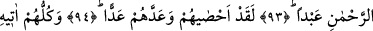

ÇOCUK EDİNMEK
RAHMÂN’A YAKIŞMAZ
85. Muttakîleri heyet halinde Rahman’ın huzuruna toplayacağımız gün.
86. Günahkârları da susuz olarak cehenneme süreceğiz.
87. O gün Rahmân (olan Allah)’ın nezdinde söz ve izin alandan başkalarının
şefâate güçleri yetmeyecektir.
88. ”Rahmân çocuk edindi” dediler.
89. Hakikaten siz, pek çirkin bir şey ortaya attınız.
90. Bundan dolayı, neredeyse gökler çatlayacak, yer yarılacak, dağlar yıkılıp
düşecektir!
91. Rahmân’a çocuk isnadında bulunmaları yüzünden.
92. Halbuki çocuk edinmek Rahmân’ın şanına yakışmaz.
93. Göklerde ve yerde olan herkes istisnasız, kul olarak Rahmân’a gelecektir.
94. O, onların hepsini kuşatmış ve sayılarını tesbit etmiştir.
95. Onların hepsi de kıyamet gününde O’nun huzuruna tek başına (yapayalnız)
gelecektir.
“Muttakîleri heyet halinde Rahman’ın huzuruna toplayacağımız gün.” Yani ey
Muhammed! Ümmetine teşvik ve korkutma yoluyla şu günü hatırlat ki, o gün takvâ ve
tâat ehlini, geniş rahmetini bol bol ihsân edecek olan rablerinin huzûrunda toplayacağız.
O kimseler heyetlerin, padişahların ikram ve ihsânını beklemek için onlara doğru akın
ettikleri gibi Rab’lerine doğru topluca akın edeceklerdir.
et-Te’vîlâtü’n-Necmiyye’de şöyle der: “Âyette sadece muttakîler topluluğunun
Allâh’ın huzûrunda toplanmaları söz konusu edilmiştir. Çünkü Rahman sıfatı, lütuf